Druhý Gamejam 2022: Zjevení davů
Půl rok po předchozím gamejamu probehl na Fakultě informačních technologií v Praze další ročník GameJamu pořadaný skupinou Grafit, SAGElabem, ggLabem, a spřatelenými organizátory.
Tak, jako každý spravný sequel byl i tento větší, (snad) lepší, pro širší publikum a stvořený více lidmi. A tak se z šesti týmů stalo jedenáct a z dvou účastnících se fakult dokonce 7. Na eventu se tak sešli účastníci z FITu, FELu, MFF, FJFI, FAMU, ZČU, a dokonce z Hollarky.
Více než kdy jindy byla akce ve znamení vaření. Zatímco účastníci se snažili z dodaných ingrediencí uvařit hru, mnozí organozátoři trávili hodiny a hodiny u trouby, či plotny, aby zásobili studenty domácím pečivem, langoši, palačinkami, cibulovými kroužky, cukrovím a vůbec nespočtem tu lahodných, tu zdravých pochutin.
Účastníci dostali k výběru dvojicí Radka a Petra vybrané čtyři ingredience, ze kterých si vybírali tři. Ty museli využít ve své hře a nějakým způsobem je zapojit. Aby inspirace zasáhla silněji, připravily pro ně dokonce kvalitní vizuální stimuly:
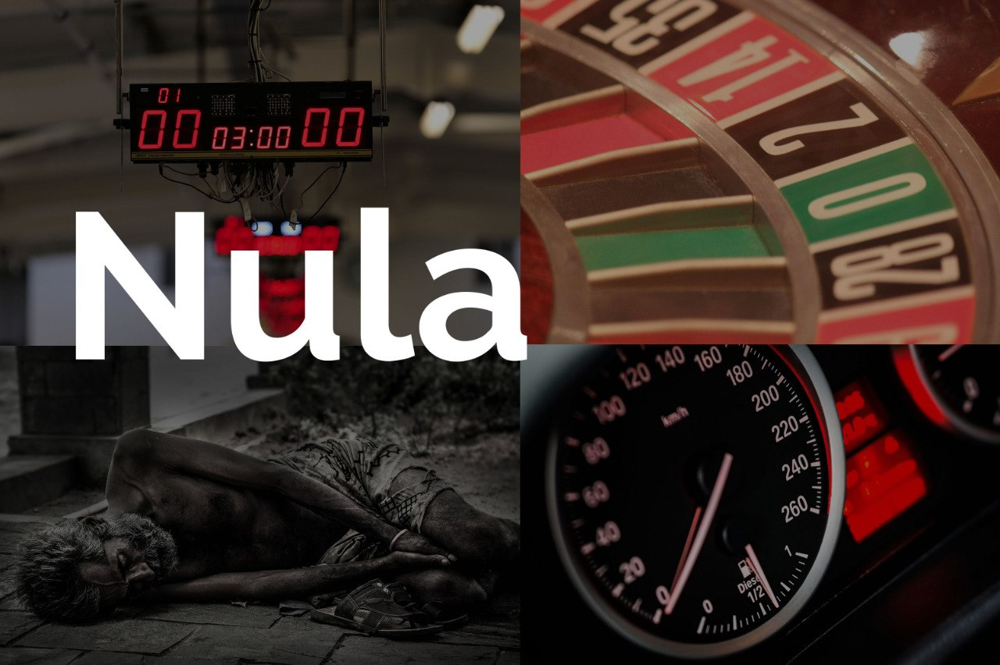
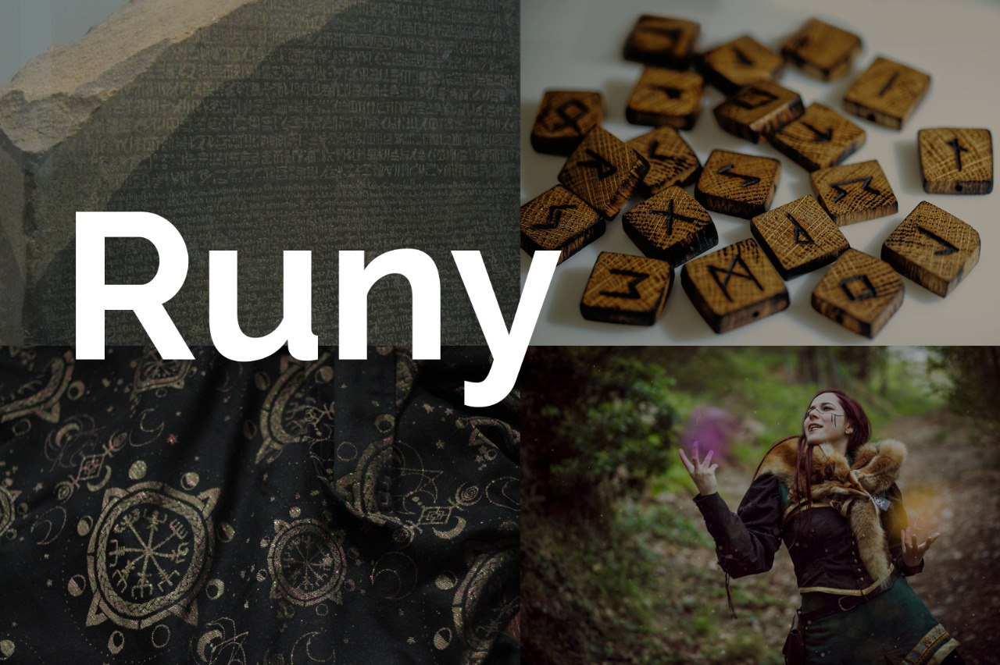 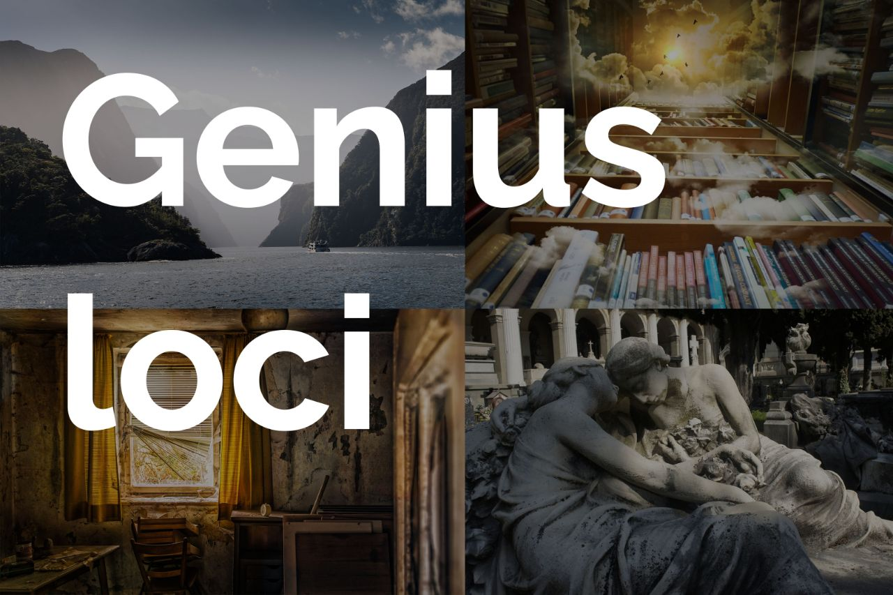
Hry se odevzdávaly přes platformu itchi.io, a tak už pár minut po skončení jamu si začaly výtvory účastníků žít vlastním životem. Připraveny ke stažení, ohodnocení, okomentování kýmkoliv - i Vámi. Jediné co potřebujete, je vytvořit si zde účet.
Ale nebylo vše ideální. Snad géniové zodiakální, snad osm a padesáté vyšší gitovské inteligence, spikly se proti ubohým vývojářům. Možná se studenti spletli v planetárni klasifikaci, považujíc drchničku a řeřichu, za rostlinu Saturnovu, kterou je však beze sporu fenykl. Třeba se v nepřátelském znamení štíra střetl mikrokosmos s makrokosmem. To vše způsobilo, že některé hry byly. Ale spustit se nedaly. A nebyly tedy součástí hodnocení poroty.
Co je však podstatnějši než soutěž sama a vyhlášené pořadí je, že během hodin, dnů, týdnů (naštěstí ne během osmi let) dodal každý z týmů hru ve stavu funkčním a hratelném. A to je to podstatné - aby hry byly publikované, abysme si je mohli zahrát, bavit se jimi. Aby udělaly radost hráčům. A naopak aby naše radost, komentáče a hodnocení udělaly radost a přinesly dalši zkušenost autorům. Ostatně to je to, co je na každém jamu podstatné - něco vytvořit a něco se naučit.
Space Origin - 1. místo
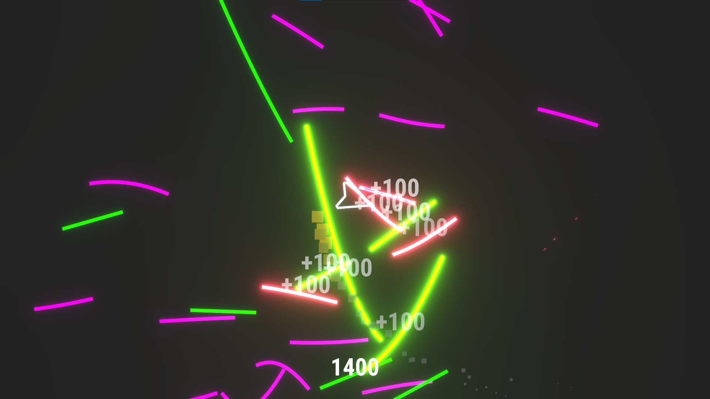
.jpg)
První dvojice studentů se rozhodla vsadit na jistotu. Jednoduchá a elegantní arkádovka s hlubokým matematickým poddtextem. jak dlouho přežijete v matematickém prostoru plném sin(x) a cos(x) funkcí? A copak sinusovky, ale předevšim ty zákeřné tangenty se stanou vašimi nočními můrami!
“Moc se mi líbí nápad se zabíjením pomocí motoru, přidává to velmi
zábavný element celemu gameplayi. Zároveň ovládání je snappy a celkový
polish je na hře opravdu znát. Nápad s matematickými funkcemi je originální,
možná bych jen podotknu, že bych za runy považoval i nějaké matematické
znaky / řeckou abecedu místo “runových” znaků, které jsou ve hře teď. Ale to
je jen detail a možné zlepšení.
Je to opravdu blízko k mobilní vydatelné hře. Je to přesne ten typ hry, co
bych hrál při cestě v metru a idealní výstup hry z gamejamu.”
Kryštof Šuk
SPirate - 2. místo
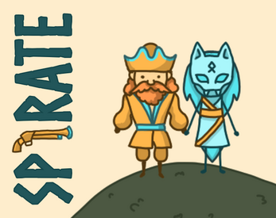

Druhé místo obsadil zkušený tým (doplněný jedním nováčkem). Kooperační hra dvou hráčů střídajících se nejen v úkolu - doslova - sysifovském, ale i v užívání jedné zbraně a navíc v nádherném, barevně dokonale vyladěném, grafickém hávu. Budete hrát za sympaticky oranžového piráta, nebo za elegantně azurového ducha?
“Hra Spirate je kooperativní hra, ve které se dobrodružný pirát Goldbeard nevědomky dostal k prokletému runovému kamenu, který musí společně s duchem lišky Narahaya vrátit do chrámu na druhém konci ostrova.
Hra je určena pro dva hráče, přičemž jeden z nich používá myš s klávesnicí a druhý hraje na gamepadu. Veškeré ovládání a herní mechaniky se hráči dozví hned v úvodu, neb tutoriál je vměstnán přímo do úvodní scény, kde si oba hráči mohou zároveň procvičit ovládání kamene a střelbu, což je mimochodem jeden ze základních principů herního designu - bezpečně si vyzkoušet jednotlivé mechaniky. Druhou fázi hry bychom mohli žánrově zařadit k shoot-em-up hrám, kde na hráče útočí ze stran různí nepřátelé. Zde se velmi příhodně uplatňuje jedna z klíčových mechanik hry, a sice fakt, že konkrétní hráč může útočit jen na konkrétní typy nepřátel, v kombinaci s přítomností pouze jedné zbraně, kterou si mezi sebou hráči musí vyměňovat. Hra tímto dostává úplně jiný rozměr a vynucuje si neustálou kooperaci, neboť jeden z hráčů musí vždy posouvat runový kámen a ten druhý střílet, aby se postupně probojovali k cíli.
Až na drobné nedostatky v oblasti fyzikální interakce nás hra zaujala neotřelými herními mechanikami, solidním vizuálem a zábavnou hratelností. Jediným větším nedostatkem budiž nutnost použití gamepadu, bez kterého lze hru hrát jen těžko.” Adam Vesecký
Binary Anomaly - 3. místo


O místo třetí s strhla tlačenice nevídaných rozměrů. Má zde být hudební hra, která je ale podivně náročná? Ma zde být originálni kooperace tří hráćů? Porota nakonec třetí místo udělila hře s jediným autorem - hře se skvělým nápadem skládání binárních čísel, hře s jednoduchými, ale promyšlenými mechanikami, hře u které jsme skutečné museli zapojit mozkové závity. Snad kdyby byla hra graficky doladěná, snad kdyby levelů autor dodal vice, hra by atakovala i vyšší pozice.
“Binary Anomaly sazí na jendoduché, ale skvěle zkombinované mechaniky. Jde o koop dvou hráčů, který lze ale - což je velmi přijemné - snadno hrát i v jednom člověku. V prvních levelech hra ukazuje svoje mechaniky - runy pohybu a sestavování binárních čísel. Později přibudou mechaniky omezení pohybu a nakonec i změna stran kudy přidávat binární čisla. Vhodná a postupná kombinace mechanik a jejich sestavení do levelu s drobným pomrknutím k hráči je to, co nás na hře zaujalo.” Radek Richtr
Útěk z Brna - 3. místo
 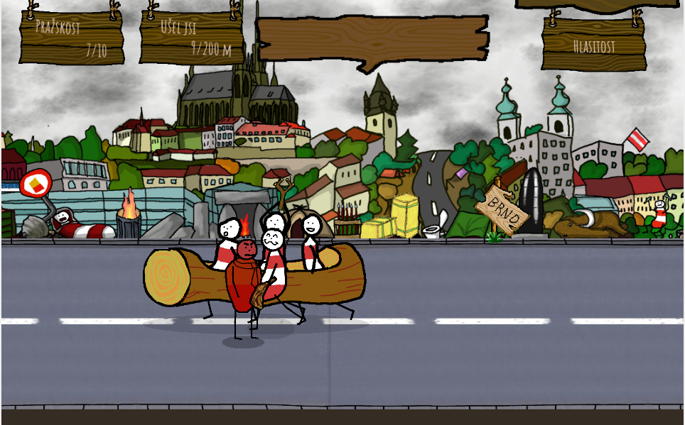
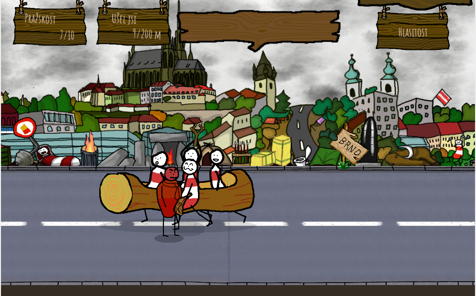
Názor poroty je jedna věc. Ale někdy ani post učitele her, ani práce ve hern=im studiu, ani nadšení pro gaming a hry všeho druhu nemusí zcela souznít s názory hráčů. Nebo - v tomto případě - účastníků gamejamu. V tomto ročníku jsme proto vyhlásili i vítěze, o kterém hlasovali právě ti, kteří zde hry tvořili.
Cenu účastníků si vydobyla - a nutno říci, ze s přehledem - jednoduchá, na vtip a humor sázející hra s vlastní hudbou i kreslenou grafikou. Hra o traumatickém zážitku. Hra o... Brnu.
“Hra má velmi vtipný nápad a určitě by ji měl zpropagovat Pražský institut pro urážení Brna. Z pohledu mého i z pohledu poroty však zvolené téma interpretuje zadané ingredience game jamu natolik volně, že jsme hru nevybrali do užšího výběru na stupně vítězů; navrhli jsme jí však zvláštní uznání, jehož vyhlášení bylo překryto ohodnocením od ostatních soutěžících. Všichni totiž víme, že Brno není nula. Nula je velice užitečné číslo, které je na začátku každé řady, jíž indexujeme pole. Stejně tak bychom v Brně těžko hledali runy, a byť je Brno daleko, nemám pocit, že bychom při hře byli od čehokoliv vzdáleni. Zbývající ingrediencí je genius loci, který je vystižen bravurně, např. tím, že pražský hrdina odmítá pít ze sklenice tu divnou žlutou tekutinu a raději ji hází po brňácích. Poněkud nerealisticky však působí brněnské metro, které je zcela očividně autorskou fikcí - je vidět, že v brněnském metru autoři hry nikdy nebyli.” Honza Matoušek
Rhune
 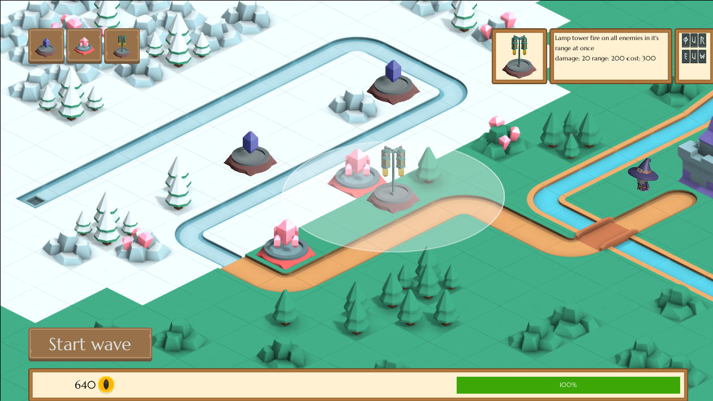
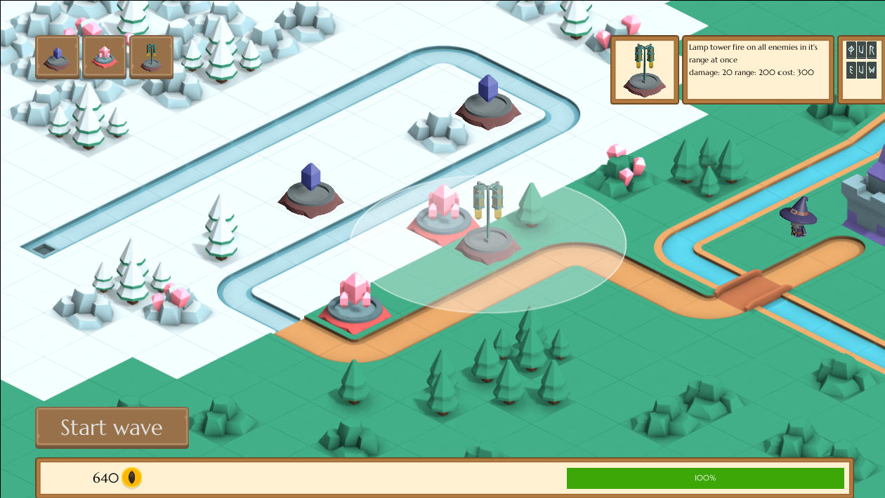
Dalši hra se sice (velmi těsně) neumístila na vítězných pozicích, ale i tak jde o hru zasluhující nemalou pozornost. A to i proto, že autoři nezaháleli, po skončení jamu si vzali k srdci naše připomínky, zapracovali na hře a dnes si ji tak můžete zahrát vyladěnou a připravenou - a to i včetně velmi povedeného tutoriálu.
“Rytmická tower defense hra Rhune má pro ničení nepřátel netypickou mechaniku. Aby věže udělovaly poškození, hráč musí hrát správnou melodii do rytmu. Verzi doladěnou po odevzdání jsem nepřestala hrát, dokud jsem neprošla všechna kola. Zkoušela jsem různé strategie umístění věží, střídání útoků i podupávání, abych zůstávala v rytmu se hrou. Gameplay hry tedy hodnotím kladně, neb naučení a zdárné provedení útoku mě bavilo.” Radka Hošková
Just a Ghost
 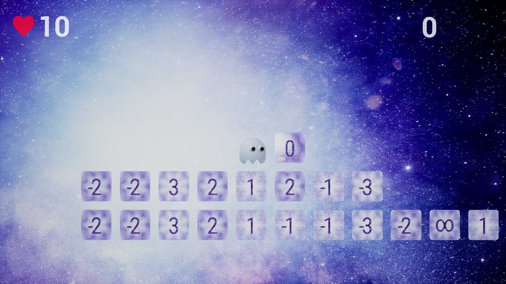
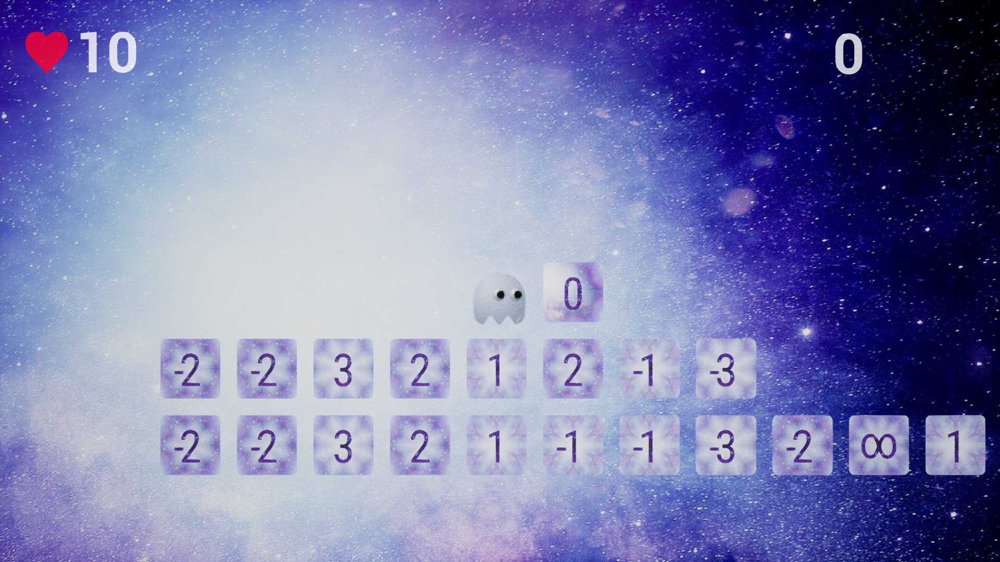
Nejen velkými hrami jest živ gamejam. Letos se nám na akci sešlo hned několik her od jednotlivců, a také hned několik řekněme silně matemeticky laděných her. Tou třetí z nich je skákačka o hladovém duchovu ohrožovaném strážcem matematické rovnováhy, který nařizuje sníst jen prvky s nulovým součtem.
“Just A Ghost je velice skromná skákačka, ve které se pohybujete po dvojrozměrné ploše a pojídáte čísla. Z hlediska konstrukčního je nutné zmínit především sofistikovaný generátor mapy a zajímavý prvotní nápad s kombinací čísel a jejich návaznost s interakcí hlavní postavy. Co však porotce zaujalo nejvíc, nebyl samotný gameplay hry, ale doslova brobdingnagské nadšení autorky, která se GameJamu zúčastnila jako dvoudenní výzvy bez utilitárních záměrů, a dokázala se svým entuziasmem vytvořit funkční hru v Unreal Enginu. GameJam by měl být především o nadšení, tvořivosti a zápalu pro věc, a právě tyto tři aspekty propůjčují autorce jedinečnou výhodu nad mnohými jinými týmy, pro které se finální okamžiky akce staly téměř osobní katarzí. Budeme doufat, že získání pronikavějšího pohledu na neomezené možnosti vlastního rozvoje autorka využije i v budoucnu, a její kultivovaná práce dá vzniknout hře, která by mohla mít potenciál stát se tabernákulem celého GameJamu. Budeme držet palce.” Adam Vesecký
Haunted House
 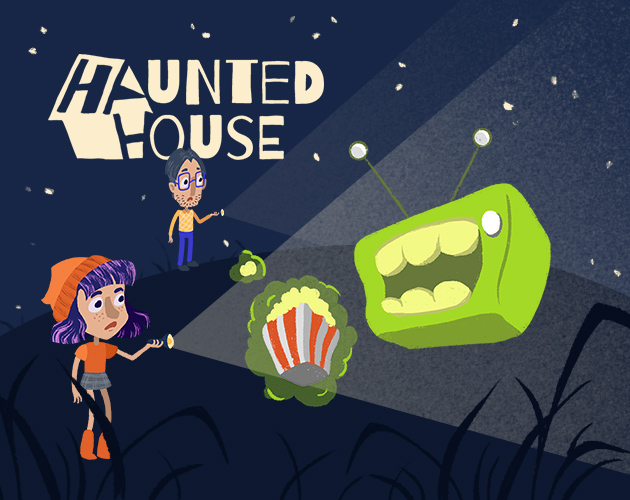
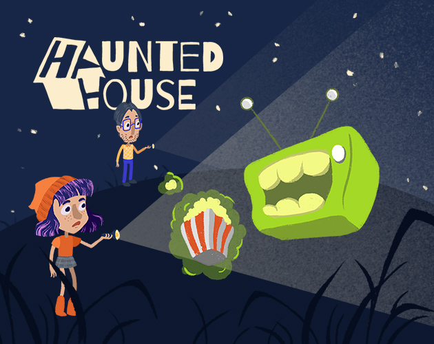
Velký tým na jednu stranu umožňuje vysokou specializaci, na druhou stranu vyžaduje i vyšší koordinaci. Jední z těch, komu nepřály géniové, vyšší inteligence a znamení zodiaku byl i tým tvoříci tuto zajímavou hru. V té se hned trojice hráčů chopí rolí exorcistů, aby očistila záhadný, procedurálně generovaný dům.
"První co musím říct je, že ze všech her z gamejamu tahle je ta, kterou lidi (po gamejamu) hráli nejaktivněji, která je jasně bavila a kterou se snažili překonat a vyhrát. Je skvělá nejan na party, ale i na školní akce a rádi ji zkouśejí jak studenti, potenciální studenti, tak zeměstnanci.
Ke hře samotné: Jedná se k kombinace "Talk and nobody explode" a "Phasmofobie" - což je zajímavé v tom, že tu druhou asi ani neznali. myšlenka tři hráčů je skvělá, pokud by mélo vzniknout nějaké (další) rozšiření pro více PC, pak by bylo fajn umístit exorcistickou knihu dovnitř hry. A když jsem u knihy - ta se mi líbí. Opravdu. Každá její čast je jiná, od if-else větví až po Vennovy diagramy. Což je nudně řečeno, že je plná návodů, podivných připadů ve stylu "pokud je majonéza v koupelně a ponožky v lednici", nebo "líta po domě zlá mikrovlnka?" a rituálních obrazců." Radek Richtr
Wrath of the Forrest


Tým FW je stálicí fitích gamejamů a vždy přijde s něčim překvapivým a inovativním. Letos to bylo nečekané zjištění toho, že odevzdaná hra je hrou tahovou a strategickou! I když se hra neumístila, hra se i po odevzdání hrála a porotci zkoušeli různé strategie a testovali vyvážení hry - a nutno říci, že hra dopadla dobře!
Hra s nulovým součtem. Zabij, nebo buď zabit. Souboj světla a stínu, smrti a života. Vlastnoručně stvořená pixel artová grafika, jakož i vlastní zvuky (nahrané po nocích bloudicim sound designerem shánějícím jiné učastníky ochotné vy´davat zvuky lišek, ptáků a medvědů) doplňují vlastní mechaniku spawnovaní monster kolem runami pokrytých stromů, zdrojů moci dvou magických duchú soupeřících o osud lesa. Hra to není rychlá a divoká. Naopak vyžaduje přemýšlení a plánování. A nutno řici, že i s rozumným AI protihráčem. Rád jsme si ji zahrál a rád si zahraji i další hru. Radek Richtr
Spirit of the Forrest
 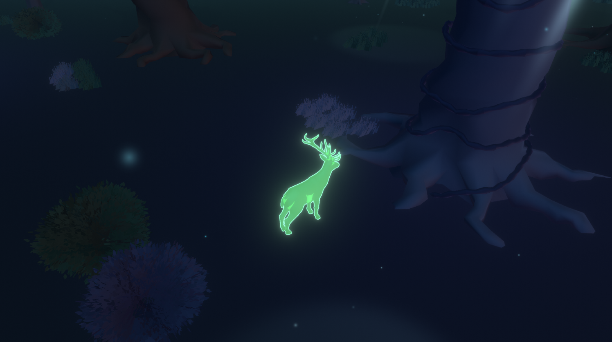
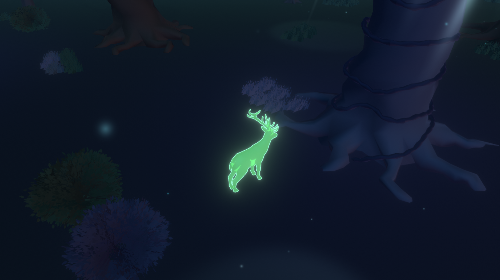
Ingredience genius loci zapracovala a tak hned dvě hry se úzce týkaly lesa a jeho mystických strážců. Jednoduchá hra jediného autora. Ač nedodělaná, genuis loci mystického lesa ohrožovaného chřadnutím, korupcí, z ní přimo dýcha - a to možná nejvíce ze všech odevzdaných her.
Jste jelen. Zelený jelen v krásném, mystickém lese. Ale ne jen tak ledajaký jelen! Jste duch, duch a strážce tohoto nádherného lesa. lesa ohroženého chorobou, korupcí, chřadnutím. Vy však umíte využit mystickou sílu prastarého oltáře, sílu manifestující se ve zlatavé záři plné naděje. Ani rychlé jelení nohy však nestači k tomu, abyste moc oltáŕe roznesli po celém lese. Korupce, chřadnutí a podivní otrávení hadi se rozrůstají rychleji, než je jim shopen jeden jelení duch vzdorovat. Dřiv, či pozdeji tak přijde konec. Zlatavé světlo vyhasne. Ale kdo ví, až les zmizí, třeba v nekonečném cyklu života objeví nový duch. Pro nové místo. Vesnici. Pole. Město. Radek Richtr
Floor Zer0
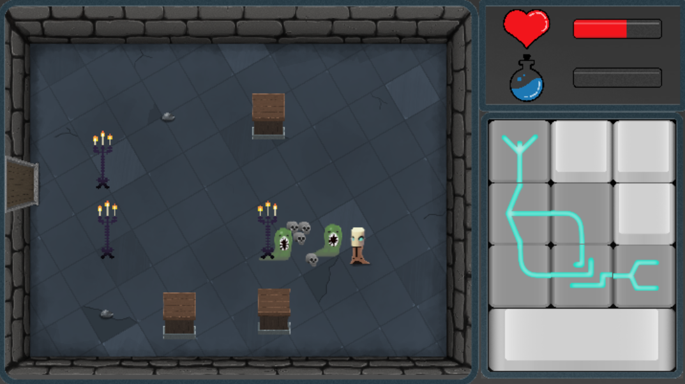 
Floor Zer0 je hra, která nejkreativněji používá mechaniku run. Ty zde totiž nenacházíte, ale vytváříte. A to pomocí numerické klávesnice. Zvládnete všechny bose se dostat až na - nulté podláži?
Jste jelen. Zelený jelen v krásném, mystickém lese. Ale ne jen tak ledajaký jelen! Jste duch, duch a strážce tohoto nádherného lesa. lesa ohroženého chorobou, korupcí, chřadnutím. Vy však umíte využit mystickou sílu prastarého oltáře, sílu manifestující se ve zlatavé záři plné naděje. Ani rychlé jelení nohy však nestači k tomu, abyste moc oltáŕe roznesli po celém lese. Korupce, chřadnutí a podivní otrávení hadi se rozrůstají rychleji, než je jim shopen jeden jelení duch vzdorovat. Dřiv, či pozdeji tak přijde konec. Zlatavé světlo vyhasne. Ale kdo ví, až les zmizí, třeba v nekonečném cyklu života objeví nový duch. Pro nové místo. Vesnici. Pole. Město. Radek Richtr
Plague Snake
 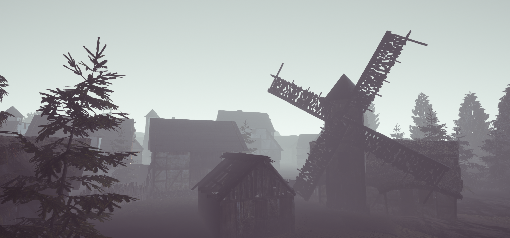
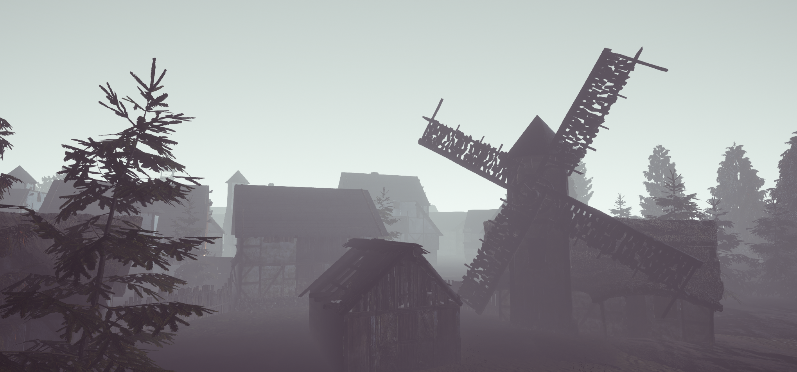
Plague Snake je hra která vypadá nádherně. Ale především je postavená na zajímavé a kreativní mechanice. Hra ve ktere craftíte a léčíte mystickou chorobou napadenou vesnici. I zde zařádila ingredience genius loci a k chorobou napadenému lesu přidala i ćhorobou napadený les.
Géniové a démoni zodiakální jsou neúprosní. Předevšim ti, kteři sídli v daleké dimenzi jménem git. Tým tvořicí hru vypravějící příběh nakažené vesnice je bohužel rozzlobil a doplatil na to. Snad se naučí vzývání potřebná k jejich uklidnění. A co jen uklidnění, ale k získání jejich dobré vůle ke spolupráci.
Hra kterou vytvořili a - byť se zpožděním - odevzdali je záludná. Jedná se totiž o další hru, ve které musíte namáhat mozek. Tentokrát však nejde matematické oparace, právě naopak. Jako morový doktor znáte totiž různé druhy korupce jen ve formě legend a přiběhů. Musíte z nich vydestilovat to podstatné, zjistit povahu té, které anomálie a namíchat lektvar pro její odstranění.
Hra má stále mnoho problémů a mínusů, ale mechanika míchaní a přiběhů je velmi povedená, stejně jako grafika samotné vesnice. Znatelně chybí nějaky přechodový efekt mizení korupce, možná i naopak nějaký viditelnější vliv na samotnou vesnici (která je jinak slušným bludištěm). A zminit se musím i o Ai generovaném intru. O krásném, tématickém, atmosférickém a NEPŘESKOČITELNÉM intru :) Radek Richtr
Během celé akce byl učastníkům k dispozici FIT tak jak jej znaji i neznají - laboratoř SAGELab se proměnila na moderní herní doupě, laboratoř ggLab nabídla zábavu svojí novou dotykovou stěnou, studenti se mohli socializovat u turnajů AoEII, Quake, Dooma, nebo na DDR tanečních podložkách. A tak se nocí budouvou nesly hlasité rytmy rychlých songů, stejně jako nadávání do nicoty padajících, či kanonádou z bazuky zabitých soupeřů.
Pořadatelé
Velký dík - a tentokrát o to větší, že na akci dorazilo dvakrát více účastníků než minule - patří pořadatelům a organizátorům, se kterými jsme gamejam upekli. Pestrá a prapodivná skupinka připomínajíci družinu z Pána prstenů, či některých DnD tažení - nesourodou, pestrou, ale mající společný cíl a navzájem se doplňující: V předu stojící dvojici Aragorna s Boromirem, naše dve DPS, reprezentovali Adam Vesecký a Kryštov Šuk. Vždy připravení vrhnout se do nejvetšicho chumlu errorů, gitových hlášení a konceptuálních nejasností. V pozadí, pod fousy se usmívající Jiří Melnikov, ovládající mocnou linuxovou magii se kterou lehce a ladně proměnil špičkovou laboratoř v lanparty byl usmívajícím se Gandalfem Šedým. Honza Matoušek pak byl svérazným trpasličim bojovníkem Gimlim oscilujícím mezi připravou trpasličí opulentní večeře (a vydávající typické trpasliči zvuku řezání dřeva) a bojem s kreativními i programovými záseky všech učastníků, kterému pak v jako šíp přesných připomínkách sekundoval náš legolas Ondra Brém. A konečně hobití aspekt dobré nálady, úsměvu a vlídnosti, kuchtící si svůj vlastní, předjamový kotlík ingrediencí nesly ti členové družiny, kteři sice stejně jako Sam se Smíškem nejsou nejvíc vidět, ale jsou o to podstatnější, neb bez nich by výprava zkrachovala a daleko nedošla - naši supporti Radka Hošková a Petra Svíčková.
 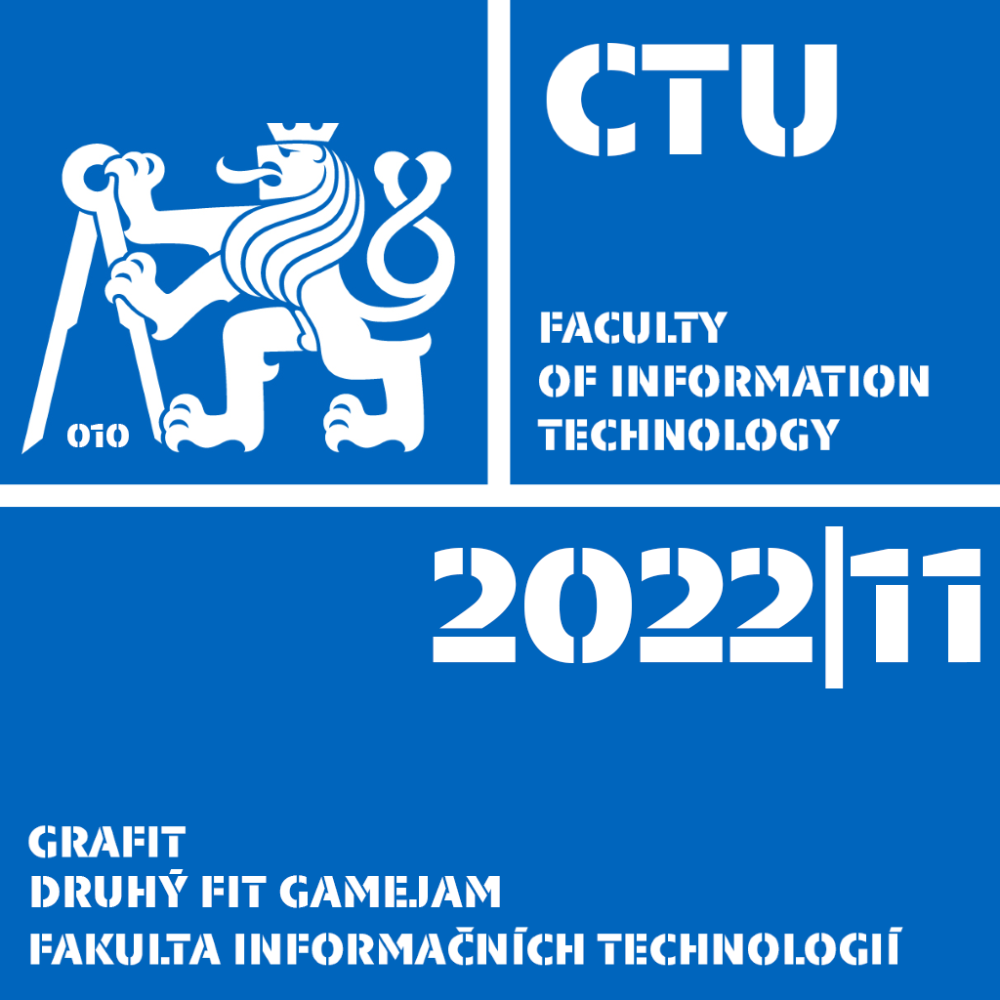
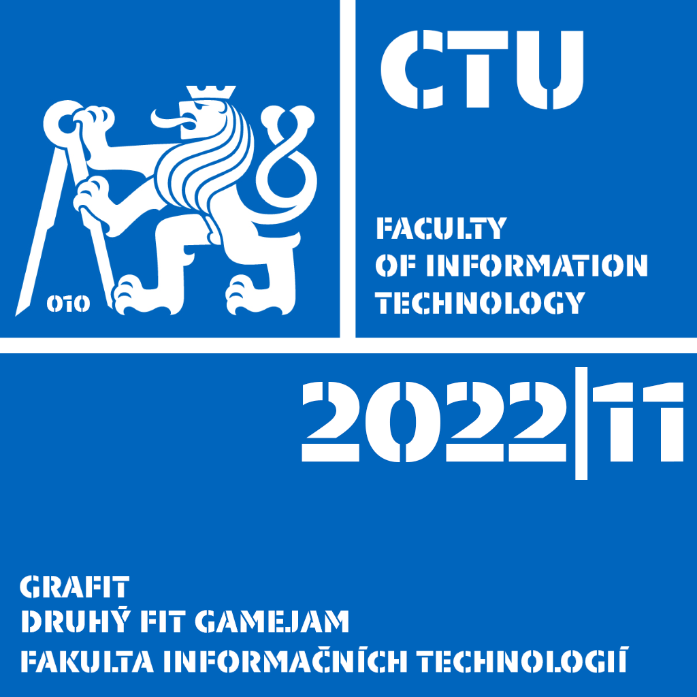
Sponzoři a partneři
- APHGAMES.CZ (věcné ceny vítězům, odborná porota a občerstvení a především video z akce),
- IPR – Centrum Architektury a Městského Plánování (pomoc s organizací),
- Spytihněv resp. HROT (hry pro vítěze)
- Asterion (knihy, knihy a knihy pro účastníky)
- a Katedra softwarového inženýrství FIT ČVUT (občerstvení).
Nezanedbatelný dík patří lidem z laboratoře SAGElab (Jiří Melnikov a Jiří Kubišta) a organizaci CESNET za poslytnutí laboratoře SAGElab, pomoc s organizací a proaktivní vyřešení restPointu.
Patneři
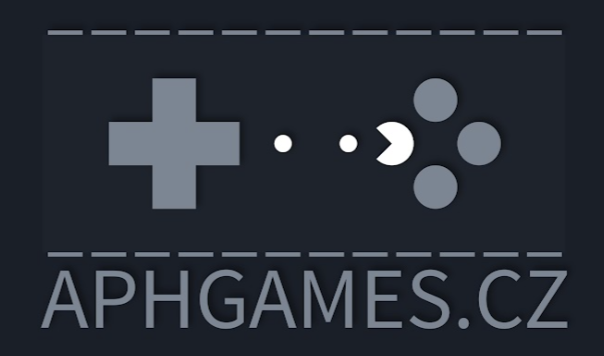

 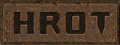
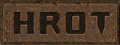
 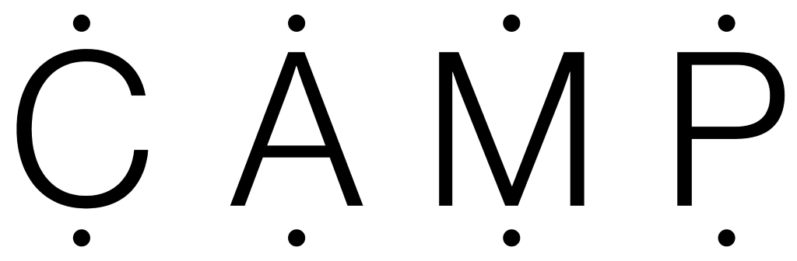
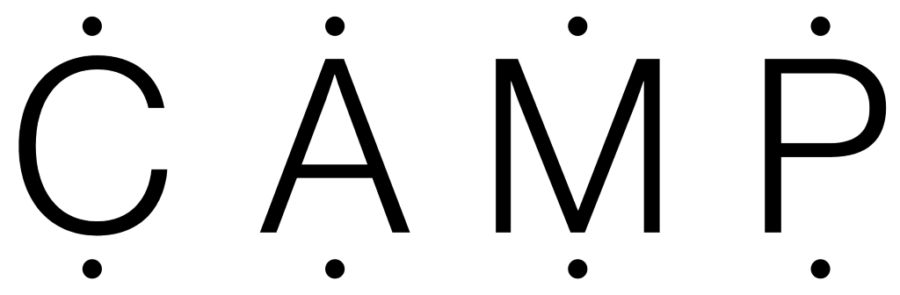
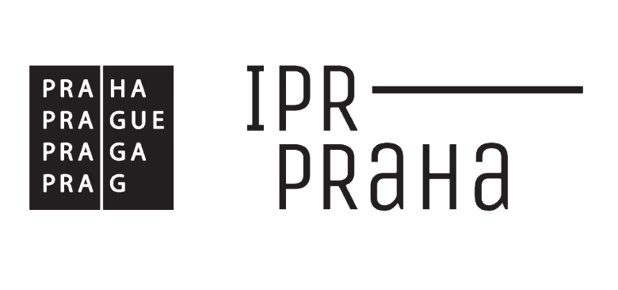
Kontakty
- email: richtrad@fit.cvut.cz
- dc: discord.gg/ezbBvSZYhv
- itch: itch.io/jam/gamejam-fit-2022-2/entries